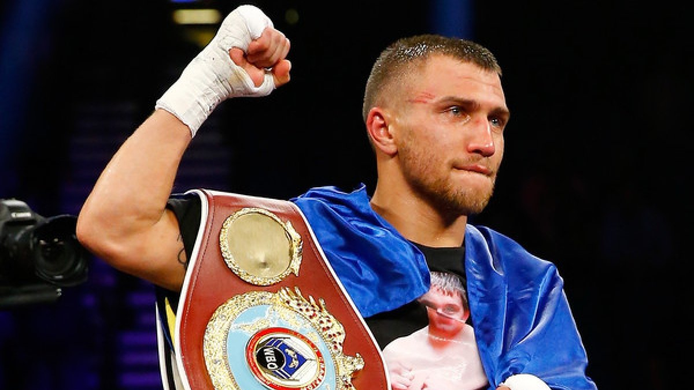

Василь Анатолійович Ломаченко – народ. 17 лютого 1988, Білгород-Дністровський, Одеська область, Українська РСР - український боксер-професіонал. Дворазовий Олімпійський чемпіон 2008 і 2012 років, дворазовий чемпіон світу 2009 і 2011 років, чемпіон Європи 2008 року, чемпіон світу серед юніорів 2006 року, чемпіон Європи серед кадетів 2004 року, багаторазовий чемпіон України. Володар Кубка Вела Баркера, заслужений майстер спорту України. Найбільш титулований боксер України. Вважається одним з найсильніших і технічних боксерів за всю історію аматорського боксу. На любительському рингу спірно програв тільки один бій в фіналі чемпіонату світу 2007 року - Альберту Селімову, але зумів взяти реванш двічі, перший раз на Олімпійських іграх в 2008 році, а другий раз в напівпрофесійної лізі WSB в 2013 році.